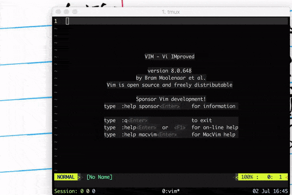

Vim: File Navigation
This is part 11 of a series of tutorial to Vim. You can read Part 10 here.
Till now we have seen several ways to navigate within a buffer in Vim. In this part we'll see how we can move across files, how to jump directly to function or variable definitions and jumping right in middle of a file at a predefined place.
:e on steroids
You want to open a file, your file is deep down in the folder hierarchy, you don't want to type in full path and of course, you want to open it fast. Vim can help you with that too.
Press :e **/<file name initials> and press <TAB> to let Vim search for all
files starting with given initials and prepare a list of choices for you. You
can cycle through the list using <TAB> and <enter> to select a file to edit.
** can also be used to search and open file at arbitrary location and not just
pwd (present working directory). Suppose your pwd is ~ and you want to open
a file somewhere deep inside /etc/lampp/config/..., you can search in Vim by
typing :e /etc/lampp/config/**/file-name, followed by <tab>.

Figure 1: Using **/10 to open org-files/essays/vim/10.org
TAGS
Unix Philosophy
- Write programs that do one thing and do it well.
- Write programs to work together.
- Write programs to handle text streams, because that is a universal interface.
Installation size of Vim is less than size of an average quality 3 minute MP3.
Instead of having every feature, it relies on help from external programs. There
are several language specific plugins which give Vim IDE like features such
as jumping to function definition, REPL etc. We won't discuss all of these but
one program here which works for (almost) all languages: ctags1.
ctags generate a tags file which has index of names found in source files2.
This index is used to jump to function, identifier definition. You can create
a tags file by executing ctags -R .3 from root directory. This will create
the tags file in root of the project. You can start Vim without any arguments
from the root and use :e **/file-name to open files so that tags file is
loaded by Vim4.
Once tags is loaded, jumping around is simple:
- you can jump to definition of the function name or identifier under cursor
by pressing
<ctrl>+]. - or explicitly search for a name by
:tag <name>. - After jumping to definition, if you search for another name you will build a deeper tag stack. Vim remembers your history of tag jumps using such tag stack.
- To go back to previous position from where you searched (that is up the tag stack)
press
<ctrl>+t. - You can see the stack by executing
:tags. - And, if there are multiple definition for same name (say because of function
overloading), Vim jumps to the first option if you press
<ctrl>+], to see all the options pressgfollowed by<ctrl>+].
(Book)Marks
Marks does exactly what you might expect, it references specific location in file
so that you can jump directly to that position. You can set marks using m[a-zA-Z]
You can use a-zA-Z for marking which are totally unrelated to the registers
which we saw in last part. A few more commands related to marking:
- Setting a new mark:
m[a-zA-Z] - Jumping to a specific mark:
'<mark>'will take you to beginning of line`will take you to the exact line and column
- List all the marks:
:marks :delmarks <marks>will delete marks
Upper case and lower case marks behave slightly differently. Lowercase marks are
local to each file, while upper case marks are global. That means if you assign
a uppercase mark to a position in file, say S in .bashrc, then whenever you
want to edit your .bashrc you can hit 'S to open and jump to saved position.
This can be very helpful if you have a file which needs to be edited often.
We'll conclude discussing marks with couple of special marks:
`.: jump to position where last change occured``: jump to last exited buffer''and``: jump back (to position where jumped from (using marks))- note this is different from
<ctrl> o:``jumps back to position where used marks to jump<ctrl> ojumps back according to jump list (:help jump-motions).
- note this is different from
Summary
| Command | Comment |
|---|---|
:e **/file-name-initials |
searches for file name recursively from current directory |
:e /dir1/dir2/**/file-name-initials |
same as above, but searches inside /dir1/dir2/ |
ctags -R . (shell command) |
generates index file (tags) |
<ctrl>+] |
jump to definition for name under cursor |
:tag <name> |
search definition for name |
<ctrl>+t |
go up the tag stack (go back to previous position from where jump to definition was made) |
:tags |
see the tag stack |
g <ctrl>+t |
go to definition (helpful when there are multiple definitions for same name |
m[a-zA-Z] |
set a new mark |
'<mark> |
jump to start of line of specified mark |
`<mark> |
jump to column and line of specified mark |
:marks |
list all marks |
:delmarks <marks> |
delete specified marks |
`. |
jump to position where last change occured |
`` |
jump to last exited buffer |
'' and `` |
jump back (jump taken using marks) |
Footnotes:
Similarly ctags works with other editors too.
tags is a text file which you easily open and play around with. It contains regex rules which helps in jumping.
-R to generate recursively for files, you may also want to add options like --exclude.
This step is necessary to make sure Vim loads the tags file. But this is not the only way.